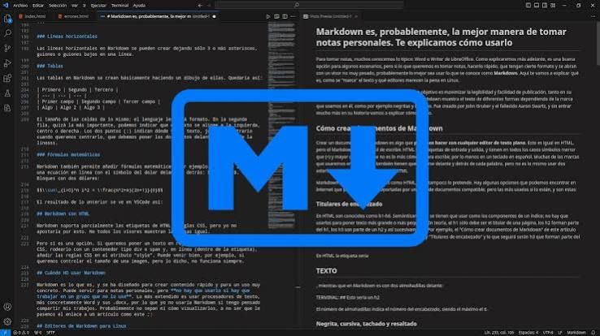

| Markdown é uma linguagem de marcação simples originalmente criada por John Gruber e Aaron Swartz. É frequentemente utilizado para formatar arquivos README, para escrever mensagens em fóruns de discussão online e para criar rich text usando um editor de texto simples. |
 |